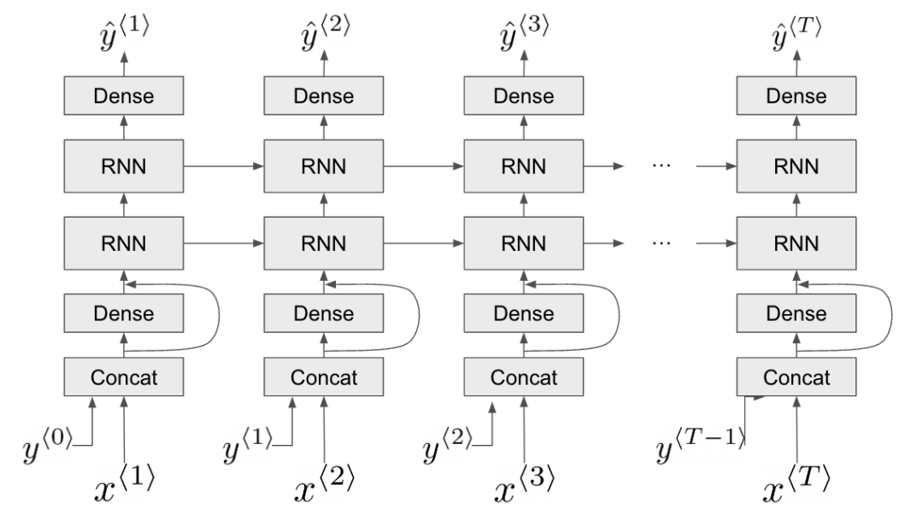
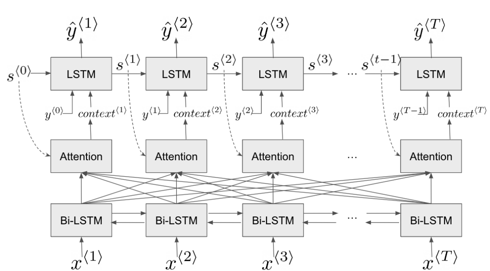
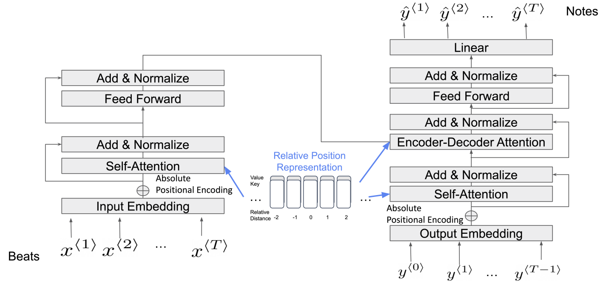

主要贡献与创新
数据处理与构建
从MAESTRO数据集中的MIDI文件分别提取节拍和音高作为模型输入和输出，进行随机切片并划分为训练集、验证集和测试集。
多模型对比实验
基于RNN、LSTM、Transformer等主流模型架构使用PyTorch搭建模型，使用1139条序列数据（159.2小时）进行训练，126条序列数据进行验证，对比选择效果最好的生成模型。
1139
训练序列数
159.2h
训练时长
126
验证序列数
+27.15%
效果提升
研究背景
业余音乐爱好者需求
随着数字音乐的普及，越来越多的业余音乐爱好者希望创作自己的音乐作品，但往往缺乏专业的音乐理论知识和作曲能力。
AI音乐生成技术
深度学习在音乐生成领域的快速发展，使得通过AI辅助音乐创作成为可能。基于序列模型的旋律生成技术为业余爱好者提供了新的创作途径。
降低门槛
让无专业音乐知识的用户也能创作旋律
创作自由
用户只需输入节拍，AI自动生成旋律
动人旋律
基于大量音乐数据学习生成动听的旋律
方法概述
1. Baseline: Decoder Only Vanilla RNN
- 存在梯度消失问题
- 不能访问未来的节拍信息
- 无法有效捕获音乐中的长期依赖关系

2. LSTM with Full Attention
- 缓解RNN中的梯度消失问题
- 以Bi-LSTM作为编码器
- 以单向LSTM作为解码器
- 添加注意力机制，允许解码器更有效利用编码器输出中最相关的信息

3. LSTM with Local Attention
- 表现更好，更容易训练
- 在时间t处的注意机制是局部的，而不是取整个上下文序列的加权平均值
- 节拍和音高有一个强大的一对一的关系，所以使用同一时间t的隐藏状态就提供了足够的信息来推断节拍
- 第二个LSTM只取ht，受到编码器-解码器的启发
- 将第二个LSTM的初始状态设置为第一个双向LSTM的最终隐藏状态，使得解码器对整体节拍结构有更好的认识

4. Transformer with Relative Position Representation
- 避免对递归架构的依赖
- 利用attention来捕捉输入和输出之间的全局依赖关系

实验结果
LSTM with Full Attention 超参数调优
| lr | Seq_len | Embed_dim | Encoder_hidden_dim | Decoder_hidden_dim | Train Accuracy | Validation Accuracy |
|---|---|---|---|---|---|---|
| 1e-3 | 64 | 32 | 256 | 512 | 0.4058 | 0.3750 |
| 1e-3 | 64 | 32 | 512 | 512 | 0.3927 | 0.3620 |
| 1e-3 | 64 | 32 | 512 | 1024 | 0.7234 | 0.4100 |
| 1e-3 | 64 | 128 | 512 | 1024 | 0.5546 | 0.4095 |
| 5e-3 | 64 | 32 | 512 | 1024 | 0.3978 | 0.3506 |
| 1e-4 | 64 | 32 | 512 | 1024 | 0.3397 | 0.3350 |
LSTM with Local Attention 超参数调优 (400 epochs)
| lr | Seq_len | Embed_dim | hidden_dim | Train Accuracy | Validation Accuracy |
|---|---|---|---|---|---|
| 1e-4 | 64 | 32 | 1024 | 0.5046 | 0.3820 |
| 1e-3 | 64 | 32 | 1024 | 0.6023 | 0.3748 |
| 5e-3 | 64 | 32 | 1024 | 0.5028 | 0.3864 |
| 1e-3 | 64 | 128 | 1024 | 0.4841 | 0.3860 |
| 1e-3 | 64 | 32 | 1024 | 0.6068 | 0.4515 |
| 1e-4 | 64 | 32 | 1024 | 0.5904 | 0.3984 |
Transformer with Relative Position Representation 超参数调优
| lr | (encoder_layer,decoder_layer) | head | Encoder_dim | hidden_dim | Train Accuracy | Validation Accuracy |
|---|---|---|---|---|---|---|
| 1e-3 | (3,3) | 8 | 64 | 1024 | 0.3920 | 0.3877 |
| 1e-3 | (3,3) | 8 | 128 | 512 | 0.4280 | 0.4070 |
| 1e-3 | (3,3) | 4 | 128 | 1024 | 0.4105 | 0.3898 |
| 1e-3 | (3,6) | 8 | 128 | 1024 | 0.4106 | 0.3908 |
| 1e-3 | (3,3) | 8 | 128 | 1024 | 0.4591 | 0.4348 |
| 5e-4 | (3,3) | 8 | 128 | 1024 | 0.4480 | 0.4262 |
模型对比 - Train/Validation Accuracy
| model | Train Accuracy | Validation Accuracy | improve |
|---|---|---|---|
| Baseline (Decoder Only Vanilla RNN) | 0.4405 | 0.3551 | / |
| LSTM with Full Attention | 0.7234 | 0.4100 | 9.96% |
| LSTM with Local Attention | 0.6068 | 0.4515 | 27.15% |
| Transformer with Relative Position Representation | 0.4591 | 0.4348 | 22.44% |
核心特性
简单交互
用户只需输入节拍，无需专业音乐知识
智能音高
AI自动为节拍填入合适的音高
动人旋律
生成富有音乐性和感染力的旋律片段
多模型架构
包含RNN、LSTM、Transformer等多种模型
注意力机制
支持Full Attention和Local Attention两种机制
性能优异
相比基线方法效果提升27.15%
应用前景
本系统可广泛应用于以下场景：
- 音乐创作助手：为业余爱好者提供灵感和创作起点
- 音乐教育工具：辅助音乐教学，展示旋律生成原理
- 短视频配乐：快速生成适合视频的背景音乐片段
- 游戏音效设计：为游戏动态生成个性化背景音乐
- 创意内容生产：为播客、广播剧等创作原创音乐